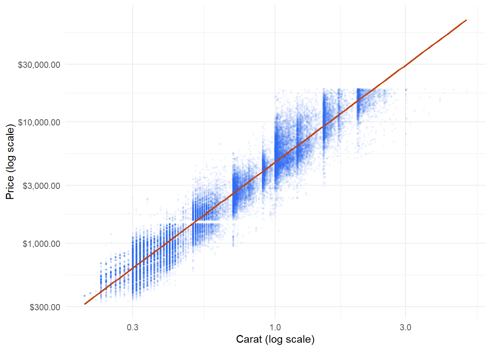
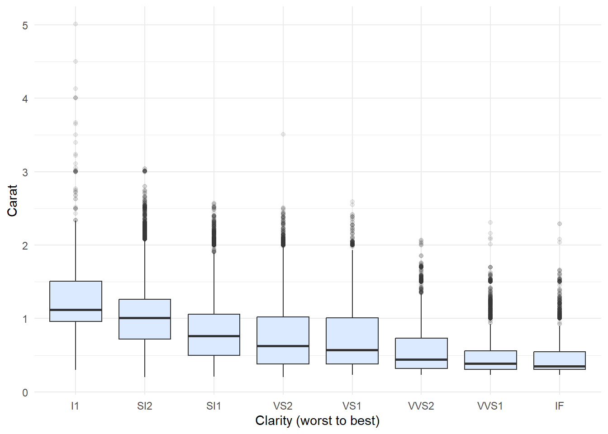

library(ggplot2)
library(dplyr)Why do ‘worse’ diamonds cost more?
r
regression
Diamonds are graded on how clear they are, how well they are cut and how colourless they are. You would expect a better grade to mean a higher price. When I looked at the prices of nearly 54,000 diamonds, I found the opposite: the clearest diamonds had some of the lowest typical prices. This post works out why.
Data: diamonds, a dataset of prices and attributes of almost 54,000 round-cut diamonds, distributed with the ggplot2 package (MIT licence). Wickham, H. (2016). ggplot2: Elegant Graphics for Data Analysis. Springer-Verlag New York.
The data ships inside ggplot2, so there is no data file to download.
The data
dim(diamonds)[1] 53940 10head(diamonds)# A tibble: 6 × 10
carat cut color clarity depth table price x y z
<dbl> <ord> <ord> <ord> <dbl> <dbl> <int> <dbl> <dbl> <dbl>
1 0.23 Ideal E SI2 61.5 55 326 3.95 3.98 2.43
2 0.21 Premium E SI1 59.8 61 326 3.89 3.84 2.31
3 0.23 Good E VS1 56.9 65 327 4.05 4.07 2.31
4 0.29 Premium I VS2 62.4 58 334 4.2 4.23 2.63
5 0.31 Good J SI2 63.3 58 335 4.34 4.35 2.75
6 0.24 Very Good J VVS2 62.8 57 336 3.94 3.96 2.48Each row is one diamond. Price is in US dollars, and weight is in carats (one carat is 0.2 grams). Clarity is graded on eight levels, from I1 (visible flaws, the worst) through SI2, SI1, VS2, VS1, VVS2 and VVS1 up to IF (internally flawless, the best). ggplot2 stores clarity in that order, so every table and chart below runs from worst to best.
The puzzle
clarity_summary <- diamonds |>
group_by(clarity) |>
summarise(
diamonds = n(),
median_price = median(price),
median_carat = median(carat)
)
knitr::kable(
clarity_summary,
col.names = c("Clarity", "Diamonds", "Median price (US$)", "Median carat"),
format.args = list(big.mark = ",")
)| Clarity | Diamonds | Median price (US$) | Median carat |
|---|---|---|---|
| I1 | 741 | 3,344 | 1.12 |
| SI2 | 9,194 | 4,072 | 1.01 |
| SI1 | 13,065 | 2,822 | 0.76 |
| VS2 | 12,258 | 2,054 | 0.63 |
| VS1 | 8,171 | 2,005 | 0.57 |
| VVS2 | 5,066 | 1,311 | 0.44 |
| VVS1 | 3,655 | 1,093 | 0.39 |
| IF | 1,790 | 1,080 | 0.35 |
Table 1 shows the puzzle. The typical flawless (IF) diamond sells for about $1,080, while the typical SI2 diamond, two steps up from the bottom grade, sells for about $4,070. Taken at face value, the market seems to pay almost four times more for a worse stone.
The last column hints at the answer. The median IF diamond weighs 0.35 carats, while the median SI2 diamond weighs just over 1 carat. The “worse” diamonds are much bigger.
Size drives price
ggplot(diamonds, aes(x = carat, y = price)) +
geom_point(alpha = 0.05, size = 0.5, colour = "#2563eb") +
geom_smooth(method = "lm", formula = y ~ x, colour = "#c2410c", linewidth = 0.8) +
scale_x_log10() +
scale_y_log10(labels = scales::label_dollar()) +
labs(x = "Carat (log scale)", y = "Price (log scale)") +
theme_minimal()
Figure 1 shows that weight is by far the biggest driver of price. On log scales the relationship is close to a straight line, which means price grows by a steady percentage for every percentage increase in weight.
ggplot(diamonds, aes(x = clarity, y = carat)) +
geom_boxplot(fill = "#dbeafe", outlier.alpha = 0.1) +
labs(x = "Clarity (worst to best)", y = "Carat") +
theme_minimal()
Figure 2 completes the picture: the typical diamond gets smaller as clarity improves. Large, flawless stones are rare, so the best-graded diamonds in this dataset tend to be small ones. Because size matters so much for price, comparing clarity grades directly is really comparing big diamonds with small ones.
Comparing like with like
To separate clarity from size, I fit a model that predicts price from weight alone.
size_model <- lm(log(price) ~ log(carat), data = diamonds)
coef(size_model)(Intercept) log(carat)
8.448661 1.675817 summary(size_model)$r.squared[1] 0.9329893Weight alone explains about 93% of the variation in log price. The slope of about 1.68 means that doubling a diamond’s weight multiplies its price by roughly 3.2 (2 to the power of 1.68), so a 1-carat diamond costs far more than two half-carat ones.
The model’s residuals show how much more or less each diamond costs than a typical diamond of the same weight. Grouping them by clarity answers the real question.
clarity_premium <- diamonds |>
mutate(residual = resid(size_model)) |>
group_by(clarity) |>
summarise(premium = (exp(median(residual)) - 1) * 100)
ggplot(clarity_premium, aes(x = clarity, y = premium, fill = premium > 0)) +
geom_col(width = 0.6) +
geom_hline(yintercept = 0, colour = "grey60") +
geom_text(
aes(label = sprintf("%+.0f%%", premium), vjust = ifelse(premium > 0, -0.4, 1.3)),
size = 3.2,
colour = "#333333"
) +
scale_fill_manual(values = c(`TRUE` = "#c2410c", `FALSE` = "#2563eb"), guide = "none") +
labs(x = "Clarity (worst to best)", y = "Price vs same-weight typical (%)") +
theme_minimal()Once weight is taken into account, the puzzle disappears. Figure 3 climbs steadily from worst to best: an I1 diamond sells for about 47% less than a typical diamond of the same weight, while a flawless IF diamond sells for about 36% more. Clarity does matter, and in the direction you would expect. Size was hiding it.
The same thing happens with cut.
diamonds |>
mutate(residual = resid(size_model)) |>
group_by(cut) |>
summarise(
diamonds = n(),
median_price = median(price),
premium_pct = round((exp(median(residual)) - 1) * 100, 1)
) |>
knitr::kable(
col.names = c("Cut", "Diamonds", "Median price (US$)", "Premium vs same weight (%)"),
format.args = list(big.mark = ",")
)In Table 2, Ideal-cut diamonds have the lowest median price of any cut, about $1,810. After adjusting for weight, though, they carry a premium of about 6%, while Fair-cut diamonds sell for about 20% less than a typical diamond of the same weight.
What I found
- Looked at on its own, better clarity seems to go with lower prices. The flawless grade has one of the lowest median prices.
- The reason is size. Weight drives price more than anything else, and the best-graded diamonds in this dataset tend to be small.
- Once weight is held fixed, better clarity and better cut both come with higher prices, just as you would expect.
This is an example of confounding: a third variable (weight) is linked to both the grade and the price, and it hides the real relationship between them. The lesson reaches well beyond diamonds. Before trusting a simple comparison between groups, it is worth asking whether the groups differ in some other way that matters.